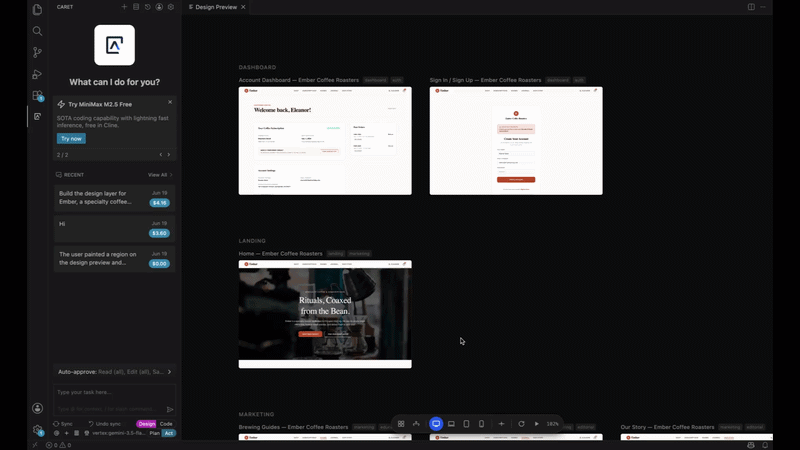

Live canvas
Your whole product, on one canvas.
Every page renders on a zoomable, pannable canvas. The page you're working on runs as live, interactive React; the rest stay fast as thumbnails. Switch viewport presets to check how it holds up across screens.
